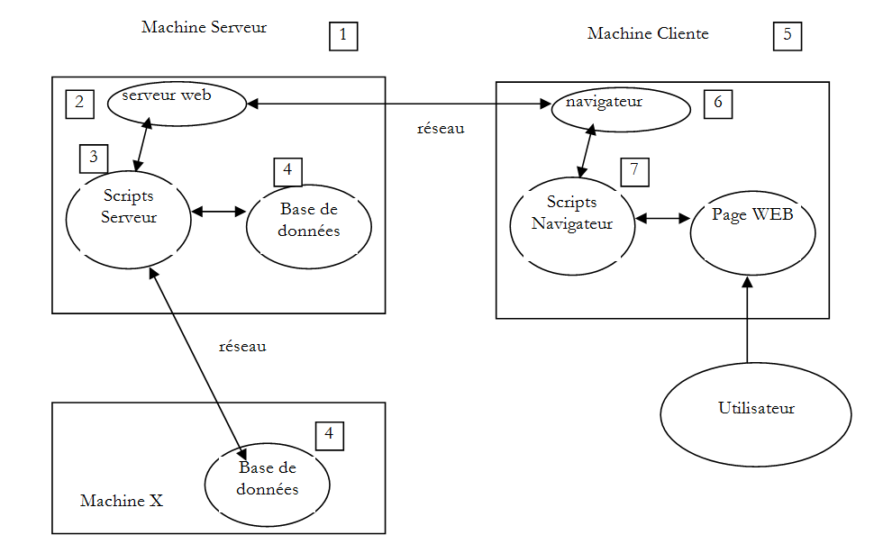
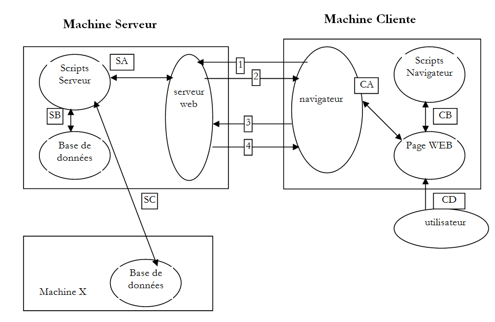
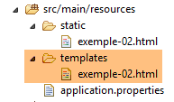
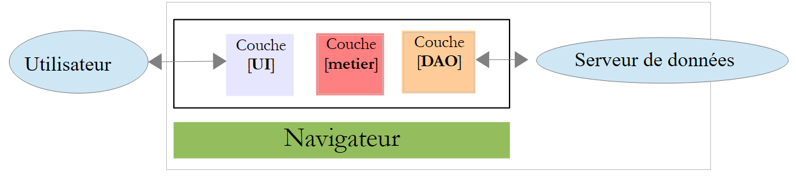
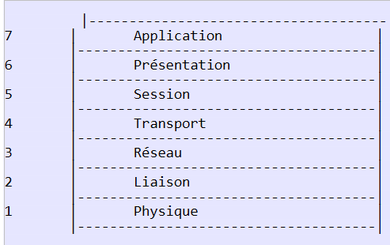
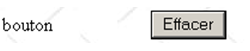
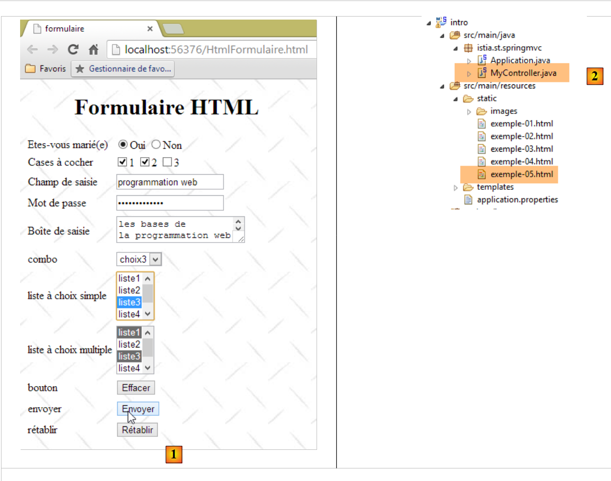
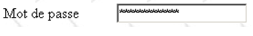

2. Los fundamentos de la programación web
El objetivo principal de este capítulo es presentar los principios clave de la programación web, que son independientes de la tecnología específica utilizada para implementarlos. Se presentan numerosos ejemplos que se recomienda probar para «asimilar» gradualmente la filosofía del desarrollo web. Los lectores que ya posean estos conocimientos pueden pasar directamente al capítulo 3.
Los componentes de una aplicación web son los siguientes:

Número | Función | Ejemplos comunes |
1 | Sistema operativo del servidor | Unix, Linux, Windows |
2 | Servidor web | Apache (Unix, Linux, Windows) IIS (Windows + plataforma .NET) Node.js (Unix, Linux, Windows) |
3 | Código del lado del servidor. Puede ejecutarse mediante módulos del servidor o mediante programas externos al servidor (CGI). | JAVASCRIPT (Node.js) PHP (Apache, IIS) JAVA (Tomcat, WebSphere, JBoss, WebLogic, ...) C#, VB.NET (IIS) |
4 | Base de datos: puede estar en la misma máquina que el programa que la utiliza o en otra máquina a través de Internet. | Oracle (Linux, Windows) MySQL (Linux, Windows) Postgres (Linux, Windows) SQL Server (Windows) |
5 | Sistema operativo del cliente | Unix, Linux, Windows |
6 | Navegador web | Chrome, Internet Explorer, Firefox, Opera, Safari, ... |
7 | Scripts del lado del cliente ejecutados dentro del navegador. Estos scripts no tienen acceso al disco del equipo del cliente. | JavaScript (todos los navegadores) |
2.1. Intercambio de datos en una aplicación web con un formulario

Número | Función |
1 | El navegador solicita una URL por primera vez (http://machine/url). No se pasan parámetros. |
2 | El servidor web envía la página web correspondiente a esa URL. Puede ser estática o generada dinámicamente por un script del lado del servidor (SA) que puede haber utilizado contenido de bases de datos (SB, SC). En este caso, el script detectará que la URL se ha solicitado sin ningún parámetro y generará la página web inicial. El navegador recibe la página y la muestra (CA). Es posible que los scripts del lado del navegador (CB) hayan modificado la página inicial enviada por el servidor. A continuación, mediante interacciones entre el usuario (CD) y los scripts (CB), la página web se modificará. En concreto, se rellenarán los formularios. |
3 | El usuario envía los datos del formulario, que deben enviarse al servidor web. El navegador solicita la URL inicial u otra, según corresponda, y transmite simultáneamente los valores del formulario al servidor. Para ello, puede utilizar dos métodos: GET y POST. Al recibir la solicitud del cliente, el servidor activa el script (SA) asociado a la URL solicitada, que detectará los parámetros y los procesará. |
4 | El servidor entrega la página web generada por el programa (SA, SB, SC). Este paso es idéntico al paso 2 anterior. La comunicación continúa ahora según los pasos 2 y 3. |
2.2. Páginas web estáticas, páginas web dinámicas
Una página estática está representada por un archivo HTML. Una página dinámica es una página HTML generada «sobre la marcha» por el servidor web.
2.2.1. Página HTML (HyperText Markup Language) estática
Creemos nuestro primer proyecto Spring MVC [1-2]:
 |
- En [1-2], creamos un nuevo proyecto basado en Spring Boot [http://projects.spring.io/spring-boot/];
 |
- la información [3-7] corresponde a la configuración de Maven del proyecto;
- en [3], el nombre del proyecto Maven;
- en [4], el grupo de Maven donde se colocará el resultado de la compilación del proyecto;
- en [5], el nombre dado al resultado de la compilación;
- en [6], una descripción del proyecto;
- en [7], el paquete en el que se colocará la clase ejecutable del proyecto;
- en [8], la naturaleza del proyecto. Se trata de un proyecto web con vistas Thymeleaf. Aquí vemos todas las dependencias de Maven listas para usar que proporciona el proyecto Spring Boot;
- en [9], especificamos que el resultado de la compilación de Maven se empaquetará en un archivo JAR en lugar de un WAR. El proyecto utilizará entonces un servidor Tomcat integrado, que se incluirá en sus dependencias;
- en [10], pasamos al siguiente paso del asistente;
 |
- en [11], especificamos el directorio del proyecto;
- en [12], finalizamos el asistente;
- En [13], el proyecto generado.
Examinemos el archivo [pom.xml] generado:
<?xml version="1.0" encoding="UTF-8"?>
<project xmlns="http://maven.apache.org/POM/4.0.0" xmlns:xsi="http://www.w3.org/2001/XMLSchema-instance"
xsi:schemaLocation="http://maven.apache.org/POM/4.0.0 http://maven.apache.org/xsd/maven-4.0.0.xsd">
<modelVersion>4.0.0</modelVersion>
<groupId>istia.st.springmvc</groupId>
<artifactId>intro</artifactId>
<version>0.0.1-SNAPSHOT</version>
<packaging>jar</packaging>
<name>springmvc-intro</name>
<description>Les bases de la programmation web</description>
<parent>
<groupId>org.springframework.boot</groupId>
<artifactId>spring-boot-starter-parent</artifactId>
<version>1.1.9.RELEASE</version>
<relativePath /> <!-- lookup parent from repository -->
</parent>
<dependencies>
<dependency>
<groupId>org.springframework.boot</groupId>
<artifactId>spring-boot-starter-web</artifactId>
</dependency>
<dependency>
<groupId>org.springframework.boot</groupId>
<artifactId>spring-boot-starter-test</artifactId>
<scope>test</scope>
</dependency>
</dependencies>
<properties>
<project.build.sourceEncoding>UTF-8</project.build.sourceEncoding>
<start-class>istia.st.springmvc.Application</start-class>
<java.version>1.7</java.version>
</properties>
<build>
<plugins>
<plugin>
<groupId>org.springframework.boot</groupId>
<artifactId>spring-boot-maven-plugin</artifactId>
</plugin>
</plugins>
</build>
</project>
Incluye toda la información proporcionada en el asistente. En las líneas 26-30, encontramos una dependencia de la que no teníamos constancia. Permite la integración de las pruebas unitarias de JUnit con Spring.
Empecemos creando una página HTML estática en este proyecto. Por defecto, debería colocarse en la carpeta [src/main/resources/static]:
 |
- En [1-4], crea un archivo HTML en la carpeta [static];
 |
- en [6], asigne un nombre a la página;
- en [7], la página se ha añadido.
El contenido de la página creada es el siguiente:
<!DOCTYPE html>
<html>
<head>
<meta charset="ISO-8859-1">
<title>Insert title here</title>
</head>
<body>
</body>
</html>
- líneas 2-10: el código está delimitado por la etiqueta raíz <html>;
- líneas 3-6: la etiqueta <head> delimita lo que se denomina el encabezado de la página;
- líneas 7-9: la etiqueta <body> delimita lo que se denomina el cuerpo de la página.
Modifiquemos este código de la siguiente manera:
<!DOCTYPE html>
<html xmlns="http://www.w3.org/1999/xhtml">
<head>
<meta http-equiv="Content-Type" content="text/html; charset=utf-8" />
<title>essai 1 : une page statique</title>
</head>
<body>
<h1>Une page statique...</h1>
</body>
</html>
- línea 5: define el título de la página; se mostrará como el título de la ventana del navegador en la que se visualiza la página;
- línea 8: texto en letra grande (<h1>).
Ejecutemos la aplicación [1-3]:
 |
A continuación, utilizando un navegador, solicitemos la URL [http://localhost:8080/exemple-01.html]:
 |
- en [1], la URL de la página mostrada;
- en [2], el título de la ventana, proporcionado por la etiqueta <title> de la página;
- en [3], el cuerpo de la página, proporcionado por la etiqueta <h1>.
Veamos [4-5], el código HTML recibido por el navegador:
 |
- En [5], el navegador recibió la página HTML que habíamos creado. La interpretó y la representó como una imagen gráfica.
2.2.2. Una página dinámica de Thymeleaf
Ahora vamos a crear una página Thymeleaf. Se trata de una página HTML estándar con etiquetas enriquecidas con atributos [Thymeleaf] [http://www.thymeleaf.org/]. Seguimos un proceso similar al de la creación de la página HTML, pero esta vez la nueva página HTML debe colocarse en la carpeta [templates]:
 |
La página [example-02.html] tendrá este aspecto:
<!DOCTYPE HTML>
<html xmlns:th="http://www.thymeleaf.org">
<head>
<title>spring mvc intro</title>
<meta http-equiv="Content-Type" content="text/html; charset=UTF-8" />
</head>
<body>
<p th:text="'Il est ' + ${heure}">Voici l'heure</p>
</body>
</html>
- línea 8: la etiqueta <p> es una etiqueta HTML que introduce un párrafo en la página mostrada. [th:text] es un atributo de [Thymeleaf] que tiene dos funciones diferentes dependiendo de si [Thymeleaf] está activo o no:
- si [Thymeleaf] no analiza la página HTML, el atributo [th:text] se ignorará porque es desconocido en HTML. El texto que se mostrará será entonces [Aquí está la hora],
- si [Thymeleaf] interpreta la página HTML, se evaluará el atributo [th:text] y su valor sustituirá al texto [Aquí está la hora]. Su valor será algo así como [Son las 17:11:06];
Veamos cómo funciona esto. Duplicaremos la página [templates/example-02.html] en la carpeta [static]. Las páginas HTML que se colocan en esta carpeta no son interpretadas por [Thymeleaf]:
 |  |  |
Ejecutamos la aplicación como hemos hecho varias veces antes y, a continuación, solicitamos la URL [http://localhost:8080/exemple-02.html] en un navegador:
 |
Vemos en [1] que el atributo [th:text] no se interpretó y tampoco provocó ningún error. El código fuente de la página que se muestra en [2] indica que el navegador recibió correctamente la página completa.
Volvamos a la página [example-02.html] de la carpeta [templates]:
 |
Las páginas HTML ubicadas en la carpeta [templates] son procesadas por [Thymeleaf]. Volvamos al código de la página:
<!DOCTYPE HTML>
<html xmlns:th="http://www.thymeleaf.org">
<head>
<title>spring mvc intro</title>
<meta http-equiv="Content-Type" content="text/html; charset=UTF-8" />
</head>
<body>
<p th:text="'Il est ' + ${heure}">Voici l'heure</p>
</body>
</html>
- línea 7: [Thymeleaf] interpretará el atributo [th:text] y sustituirá [Aquí está la hora] por el valor de la expresión:
Esta expresión utiliza la variable [${time}], donde [time] pertenece a la plantilla de vista [example-02.html]. Por lo tanto, necesitamos crear esta plantilla. Para ello, seguiremos el ejemplo comentado en la sección 1.6. Actualizamos el proyecto de la siguiente manera:
 |
En [1], añadimos el siguiente controlador:
package istia.st.springmvc;
import java.text.SimpleDateFormat;
import java.util.Date;
import org.springframework.stereotype.Controller;
import org.springframework.ui.Model;
import org.springframework.web.bind.annotation.RequestMapping;
@Controller
public class MyController {
@RequestMapping("/")
public String heure(Model model) {
// time format
SimpleDateFormat formater = new SimpleDateFormat("HH:MM:ss");
// the hour of the moment
String heure = formater.format(new Date());
// set the time in the view model
model.addAttribute("heure", heure);
// display the [exemple-02.html] view
return "exemple-02";
}
}
- líneas 13-14: el método [time] gestiona la URL [/];
- línea 14: [Model model] es un modelo vacío. La acción [time] debe rellenarlo con los atributos que quiere ver en el modelo. Sabemos que la vista [example-02.html] espera un atributo llamado [time];
- líneas 19-22: implementa lo que acabamos de explicar. Se mostrará la vista [example-02.html] (línea 22) con un atributo llamado [time] en su modelo (línea 20);
- línea 16: se crea un formateador de fecha. El formato [HH:MM:ss] utilizado es un formato [horas:minutos:segundos] en el que las horas están en el rango [0-24];
- línea 18: utilizando este formateador, formateamos la fecha de hoy;
- línea 20: la hora resultante se asigna a un atributo llamado [time];
Iniciamos la aplicación y solicitamos la URL [/]:
 |
- [1] muestra la página resultante y [2] su contenido HTML. Podemos ver que el texto inicial [Aquí está la hora] ha desaparecido por completo;
Si ahora actualizamos la página [1] (F5), obtenemos una visualización diferente (nueva hora) aunque la URL no cambie. Este es el aspecto dinámico de la página: su contenido puede cambiar con el tiempo.
De lo anterior, podemos ver la naturaleza fundamentalmente diferente de las páginas dinámicas y estáticas.
2.2.3. Configuración de la aplicación Spring Boot
Volvamos a la arquitectura del proyecto Eclipse:
 |
El archivo [application.properties] se utiliza para configurar la aplicación Spring Boot. Por ahora, este archivo está vacío. Se puede utilizar para configurar la aplicación de diversas formas, tal y como se describe en la URL [http://docs.spring.io/spring-boot/docs/current/reference/html/common-application-properties.html]. Utilizaremos el siguiente archivo [application.properties] [2]:
- Línea 1: establece el puerto de servicio de la aplicación web;
- línea 2: establece el contexto de la aplicación web;
Con esta configuración, se podrá acceder a la página estática [example-01.html] en la URL [http://localhost:9000/intro/exemple-01.html]:
 |
2.3. Scripts del lado del navegador
Una página HTML puede contener scripts que serán ejecutados por el navegador. El principal lenguaje de programación del lado del navegador es actualmente (enero de 2015) JavaScript. Se han creado cientos de bibliotecas utilizando este lenguaje para facilitar el trabajo de los desarrolladores.
Creemos una nueva página [example-03.html] en la carpeta [static] del proyecto existente:
 |
Edita el archivo [example-03.html] con el siguiente contenido:
<!DOCTYPE html>
<html xmlns="http://www.w3.org/1999/xhtml">
<head>
<meta http-equiv="Content-Type" content="text/html; charset=utf-8" />
<title>exemple Javascript</title>
<script type="text/javascript">
function réagir() {
alert("Vous avez cliqué sur le bouton !");
}
</script>
</head>
<body>
<input type="button" value="Cliquez-moi" onclick="réagir()" />
</body>
</html>
- Línea 13: Define un botón (atributo type) con el texto «Haga clic aquí» (atributo value). Al hacer clic, se ejecuta la función JavaScript [react] (atributo onclick);
- líneas 6–10: un script de JavaScript;
- líneas 7-9: la función [react];
- Línea 8: muestra un cuadro de diálogo con el mensaje [Has hecho clic en el botón].
Veamos la página en un navegador:
 |
- en [1], la página mostrada;
- en [2], el cuadro de diálogo que aparece al hacer clic en el botón.
Al hacer clic en el botón, no se establece comunicación con el servidor. El código JavaScript lo ejecuta el navegador.
Gracias a la gran cantidad de bibliotecas de JavaScript disponibles, ahora podemos integrar aplicaciones completas directamente en el navegador. Esto da lugar a las siguientes arquitecturas:
 |
- 1-2: el servidor HTML es un servidor para páginas estáticas HTML5/CSS/JavaScript;
- 3-4: Las páginas HTML5/CSS/JavaScript servidas interactúan directamente con el servidor de datos. El servidor de datos envía datos sin marcado HTML. JavaScript inserta estos datos en las páginas HTML ya presentes en el navegador.
En esta arquitectura, el código JavaScript puede resultar engorroso. Por eso, nuestro objetivo es estructurarlo en capas, tal y como hacemos con el código del lado del servidor:
 |
- la capa [UI] es la que interactúa con el usuario;
- la capa [DAO] interactúa con el servidor de datos;
- la capa [de negocio] contiene procedimientos de negocio que no interactúan ni con el usuario ni con el servidor de datos. Es posible que esta capa no exista.
2.4. Comunicación cliente-servidor
Volvamos a nuestro diagrama inicial que ilustra los componentes de una aplicación web:

Aquí nos interesan los intercambios entre el equipo cliente y el equipo servidor. Estos se producen a través de una red, y conviene repasar la estructura general de los intercambios entre dos equipos remotos.
2.4.1. El modelo OSI
El modelo de red abierta conocido como OSI (Modelo de Referencia de Interconexión de Sistemas Abiertos), definido por la ISO (Organización Internacional de Normalización), describe una red ideal en la que la comunicación entre máquinas puede representarse mediante un modelo de siete capas:
 |
Cada capa recibe servicios de la capa situada debajo de ella y proporciona sus propios servicios a la capa situada encima. Supongamos que dos aplicaciones ubicadas en máquinas diferentes, A y B, desean comunicarse: lo hacen en la capa de aplicación. No necesitan conocer todos los detalles del funcionamiento de la red: cada aplicación pasa la información que desea transmitir a la capa situada debajo de ella: la capa de presentación. Por lo tanto, la aplicación solo necesita conocer las reglas para interactuar con la capa de presentación. Una vez que la información se encuentra en la capa de presentación, se transmite según otras reglas a la capa de sesión, y así sucesivamente, hasta que la información llega al medio físico y se transmite físicamente a la máquina de destino. Allí, se someterá al proceso inverso al que se sometió en la máquina emisora.
En cada capa, el proceso emisor responsable de enviar la información la envía a un proceso receptor en la otra máquina que pertenece a la misma capa que él. Lo hace de acuerdo con ciertas reglas conocidas como el protocolo de capa. Por lo tanto, tenemos el siguiente diagrama de comunicación final:
 |
Las funciones de las diferentes capas son las siguientes:
Física | Garantiza la transmisión de bits a través de un medio físico. Esta capa incluye equipos terminales de procesamiento de datos (DPTE), como terminales u ordenadores, así como equipos de terminación de circuitos de datos (DCTE), como moduladores/demoduladores, multiplexores y concentradores. Las consideraciones clave en este nivel son:
|
Enlace de datos | Oculta las características físicas de la capa física. Detecta y corrige los errores de transmisión. |
Red | Gestiona la ruta que debe seguir la información enviada a través de la red. Esto se denomina enrutamiento: determinar la ruta que debe seguir la información para llegar a su destino. |
Transporte | Permite la comunicación entre dos aplicaciones, mientras que las capas anteriores solo permitían la comunicación entre máquinas. Un servicio que ofrece esta capa puede ser la multiplexación: la capa de transporte puede utilizar una única conexión de red (de máquina a máquina) para transmitir datos pertenecientes a múltiples aplicaciones. |
Sesión | Esta capa proporciona servicios que permiten a una aplicación abrir y mantener una sesión de trabajo en una máquina remota. |
Presentación | Su objetivo es estandarizar la representación de los datos entre diferentes máquinas. Así, los datos procedentes de la máquina A serán «formateados» por la capa de presentación de la máquina A según un formato estándar antes de enviarse a través de la red. Al llegar a la capa de presentación de la máquina de destino B, que los reconocerá gracias a su formato estándar, se formatearán de manera diferente para que la aplicación de la máquina B pueda reconocerlos. |
Aplicación | En este nivel, encontramos aplicaciones que suelen estar más cerca del usuario, como el correo electrónico o la transferencia de archivos. |
2.4.2. El modelo TCP/IP
El modelo OSI es un modelo ideal. El conjunto de protocolos TCP/IP se aproxima a él de la siguiente manera:
 |
- la interfaz de red (la tarjeta de red del ordenador) desempeña las funciones de las capas 1 y 2 del modelo OSI
- la capa IP (Protocolo de Internet) desempeña las funciones de la capa 3 (red)
- La capa TCP (Protocolo de control de transmisión) o UDP (Protocolo de datagramas de usuario) desempeña las funciones de la capa 4 (transporte). El protocolo TCP garantiza que los paquetes de datos intercambiados entre máquinas de l e lleguen a su destino. Si no es así, reenvía los paquetes perdidos. El protocolo UDP no realiza esta tarea, por lo que corresponde al desarrollador de la aplicación hacerlo. Por eso, en Internet —que no es una red 100 % fiable— el protocolo TCP es el más utilizado. A esto se le denomina red TCP-IP.
- La capa de aplicación abarca las funciones de las capas 5 a 7 del modelo OSI.
Las aplicaciones web residen en la capa de aplicación y, por lo tanto, dependen de los protocolos TCP/IP. Las capas de aplicación de los equipos cliente y servidor intercambian mensajes, que se confían a las capas 1 a 4 del modelo para que sean enrutados a su destino. Para comunicarse entre sí, las capas de aplicación de ambos equipos deben «hablar» el mismo idioma o protocolo. El protocolo utilizado por las aplicaciones web se denomina HTTP (HyperText Transfer Protocol). Se trata de un protocolo basado en texto, lo que significa que las máquinas intercambian líneas de texto a través de la red para comunicarse. Estos intercambios están estandarizados, lo que significa que el cliente dispone de un conjunto de mensajes para indicar al servidor exactamente lo que desea, y el servidor también dispone de un conjunto de mensajes para proporcionar al cliente su respuesta. Este intercambio de mensajes adopta la siguiente forma:

Cliente --> Servidor
Cuando el cliente realiza una solicitud al servidor web, envía
- líneas de texto en formato HTTP para indicar lo que quiere;
- una línea en blanco;
- opcionalmente, un documento.
Servidor --> Cliente
Cuando el servidor responde al cliente, envía
- líneas de texto en formato HTTP para indicar lo que está enviando;
- una línea en blanco;
- opcionalmente, un documento.
Por lo tanto, los intercambios siguen el mismo formato en ambas direcciones. En ambos casos, se puede enviar un documento, aunque es poco habitual que un cliente envíe un documento al servidor. Pero el protocolo HTTP lo permite. Esto es lo que permite, por ejemplo, que los abonados de un proveedor de servicios de Internet (ISP) suban diversos documentos a su sitio web personal alojado por dicho ISP. Los documentos intercambiados pueden ser de cualquier tipo. Consideremos un navegador que solicita una página web que contiene imágenes:
- el navegador se conecta al servidor web y solicita la página que desea. Los recursos solicitados se identifican de forma única mediante URL (Uniform Resource Locators). El navegador envía solo encabezados HTTP y ningún documento.
- El servidor responde. Primero envía encabezados HTTP que indican qué tipo de respuesta está enviando. Puede tratarse de un error si la página solicitada no existe. Si la página existe, el servidor indicará en los encabezados HTTP de su respuesta que enviará un documento HTML (HyperText Markup Language) a continuación. Este documento es una secuencia de líneas de texto en formato HTML. El texto HTML contiene etiquetas (marcadores) que proporcionan al navegador instrucciones sobre cómo mostrar el texto.
- El cliente sabe, por los encabezados HTTP del servidor, que recibirá un documento HTML. Analizará este documento y puede que observe que contiene referencias a imágenes. Estas imágenes no están incluidas en el documento HTML. Por lo tanto, realiza una nueva solicitud al mismo servidor web para pedir la primera imagen que necesita. Esta solicitud es idéntica a la realizada en el paso 1, salvo que el recurso solicitado es diferente. El servidor procesará esta solicitud enviando la imagen solicitada al cliente. Esta vez, en su respuesta, los encabezados HTTP especificarán que el documento enviado es una imagen y no un documento HTML.
- El cliente recupera la imagen enviada. Los pasos 3 y 4 se repetirán hasta que el cliente (normalmente un navegador) tenga todos los documentos necesarios para mostrar la página completa.
2.4.3. El protocolo HTTP
Exploremos el protocolo HTTP a través de ejemplos. ¿Qué intercambian un navegador y un servidor web?
El servicio web o servicio HTTP es un servicio TCP/IP que suele funcionar en el puerto 80. Podría funcionar en un puerto diferente. En ese caso, el navegador del cliente tendría que especificar ese puerto en la URL que solicita. Una URL suele tener la siguiente forma:
protocolo://máquina[:puerto]/ruta/información
donde
protocolo | http para el servicio web. Un navegador también puede actuar como cliente para FTP, noticias, Telnet y otros servicios. |
máquina | nombre de la máquina que aloja el servicio web |
puerto | Puerto del servicio web. Si es el 80, se puede omitir el número de puerto. Este es el caso más habitual |
ruta | ruta al recurso solicitado |
info | información adicional proporcionada al servidor para especificar la solicitud del cliente |
¿Qué hace un navegador cuando un usuario solicita que se cargue una URL?
- Establece una conexión TCP/IP con la máquina y el puerto especificados en la parte máquina[:puerto] de la URL. Establecer una conexión TCP/IP significa crear un «canal» de comunicación entre dos máquinas. Una vez establecido este canal, toda la información intercambiada entre las dos máquinas pasará a través de él. La creación de este canal TCP/IP aún no implica el protocolo HTTP de la Web.
- Una vez establecida la conexión TCP/IP, el cliente envía su solicitud al servidor web mediante el envío de líneas de texto (comandos) en formato HTTP. Envía la parte path/info de la URL al servidor
- El servidor responderá de la misma manera y a través de la misma conexión
- Una de las dos partes decidirá cerrar la conexión. Esto depende del protocolo HTTP utilizado. Con HTTP 1.0, el servidor cierra la conexión tras cada una de sus respuestas. Esto obliga a un cliente que necesita realizar múltiples solicitudes para recuperar los distintos documentos que componen una página web a abrir una nueva conexión para cada solicitud, lo que conlleva un coste. Con el protocolo HTTP/1.1, el cliente puede indicar al servidor que mantenga la conexión abierta hasta que le indique que la cierre. Por lo tanto, puede recuperar todos los documentos de una página web con una sola conexión y cerrarla él mismo una vez obtenido el último documento. El servidor detectará este cierre y cerrará la conexión también.
Para analizar las comunicaciones entre un cliente y un servidor web, utilizaremos la extensión [Advanced Rest Client] para el navegador Chrome que instalamos en la sección 9.6. Nos encontraremos en la siguiente situación:

El servidor web puede ser cualquier servidor. En este caso, nuestro objetivo es examinar los intercambios que se producirán entre el navegador y el servidor web. Anteriormente, creamos la siguiente página HTML estática:
<!DOCTYPE html>
<html xmlns="http://www.w3.org/1999/xhtml">
<head>
<meta http-equiv="Content-Type" content="text/html; charset=utf-8" />
<title>essai 1 : une page statique</title>
</head>
<body>
<h1>Une page statique...</h1>
</body>
</html>
que vemos en un navegador:
 |
Podemos ver que la URL solicitada es: [http://localhost:9000/intro/exemple-01.html]. Por lo tanto, el servidor web es localhost (=máquina local) en el puerto 9000. Utilicemos la aplicación [Advanced Rest Client] para solicitar la misma URL:
 |
- En [1], inicia la aplicación (en la pestaña [Aplicaciones] de una nueva pestaña de Chrome);
- en [2], seleccione la opción [Solicitar];
- en [3], especifique el servidor al que desea realizar la consulta: http://localhost:9000;
- en [4], especifique la URL solicitada: /intro/example-01.html;
- en [5], añada cualquier parámetro a la URL. En este caso, ninguno;
- en [6], especifique el método HTTP utilizado para la solicitud, en este caso GET.
Esto da como resultado la siguiente solicitud:
 |
La solicitud preparada de esta manera [7] es enviada al servidor por [8]. La respuesta recibida es entonces la siguiente:
 |
Anteriormente mencionamos que los intercambios entre cliente y servidor adoptan la siguiente forma:
- En [1], vemos los encabezados HTTP enviados por el navegador en su solicitud. No tenía ningún documento que enviar;
- en [2], vemos los encabezados HTTP enviados por el servidor en respuesta. En [3], vemos el documento que envió.
En [3], reconocemos la página HTML estática que colocamos en el servidor web.
Examinemos la solicitud HTTP del navegador:
- La línea 1 no fue mostrada por la aplicación;
- Línea 6: El navegador se identifica con el encabezado [User-Agent];
- línea 7: el navegador indica que está enviando un documento de texto (text/plain) en formato UTF-8 al servidor. De hecho, en este caso, el navegador no envió ningún documento;
- línea 8: el navegador indica que acepta cualquier tipo de documento como respuesta;
- línea 9: el navegador especifica los formatos de documento aceptados;
- línea 10: el navegador especifica los idiomas que prefiere por orden de preferencia.
El servidor respondió enviando los siguientes encabezados HTTP:
- línea 1: no fue mostrada por la aplicación;
- línea 2: el servidor se identifica, en este caso un servidor Apache-Coyote;
- línea 3: la fecha en que se modificó por última vez el documento;
- línea 4: el tipo de documento enviado por el servidor. En este caso, un documento HTML;
- línea 5: el tamaño en bytes del documento HTML enviado.
- línea 6: fecha y hora de la respuesta;
2.4.4. Conclusión
Hemos analizado la estructura de la solicitud de un cliente web y la respuesta del servidor a la misma mediante algunos ejemplos. La comunicación se lleva a cabo a través del protocolo HTTP, un conjunto de comandos basados en texto que se intercambian entre ambas partes. La solicitud del cliente y la respuesta del servidor siguen la misma estructura:
Los dos comandos habituales para solicitar un recurso son GET y POST. El comando GET no va acompañado de un documento. El comando POST, por su parte, va acompañado de un documento que es un , en la mayoría de los casos, una cadena de caracteres que contiene todos los valores introducidos en un formulario. El comando HEAD permite solicitar únicamente los encabezados HTTP y no va acompañado de un documento.
En respuesta a la solicitud de un cliente, el servidor envía una respuesta con la misma estructura. El recurso solicitado se transmite en la sección [Document], a menos que el comando del cliente fuera HEAD, en cuyo caso solo se envían los encabezados HTTP.
2.5. Conceptos básicos de HTML
Un navegador web puede mostrar diversos documentos, siendo el más común el documento HTML (HyperText Markup Language). Se trata de texto formateado mediante etiquetas con el formato <etiqueta>texto</etiqueta>. Así, el texto <B>importante</B> mostrará la palabra «importante» en negrita. Existen etiquetas independientes, como la etiqueta <hr/>, que muestra una línea horizontal. No repasaremos todas las etiquetas que pueden encontrarse en un texto HTML. Existen muchos programas de software WYSIWYG que permiten crear una página web sin escribir una sola línea de código HTML. Estas herramientas generan automáticamente el código HTML para un diseño creado con el ratón y controles predefinidos. Así, puedes insertar (con el ratón) una tabla en la página y luego ver el código HTML generado por el software para descubrir las etiquetas que se deben usar para definir una tabla en una página web. Es tan sencillo como eso. Además, el conocimiento de HTML es esencial, ya que las aplicaciones web dinámicas deben generar ellas mismas el código HTML para enviarlo a los clientes web. Este código se genera mediante programación y, por supuesto, debes saber qué generar para que el cliente reciba la página web que desea.
En resumen, no es necesario conocer todo el lenguaje HTML para empezar a programar para la web. Sin embargo, estos conocimientos son necesarios y se pueden adquirir mediante el uso de editores de páginas web WYSIWYG, como DreamWeaver y muchos otros. Otra forma de descubrir las complejidades del HTML es navegar por la web y ver el código fuente de páginas que contengan elementos interesantes con los que no te hayas encontrado antes.
2.5.1. Un ejemplo
Considera el siguiente ejemplo, que incluye algunos elementos que suelen encontrarse en un documento web, como:
- una tabla;
- una imagen;
- un enlace.
 |  |
Un documento HTML suele tener la siguiente estructura:
<html> <head> <title>Un título</title> ... </head> <atributos del cuerpo> ... </body></html>
Todo el documento está delimitado por las etiquetas <html>...</html>. Consta de dos partes:
- <head>...</head>: esta es la parte no visible del documento. Proporciona información al navegador que mostrará el documento. A menudo contiene la etiqueta <title>...</title>, que establece el texto que aparecerá en la barra de título del navegador. También puede contener otras etiquetas, en particular las que definen las palabras clave del documento, que luego utilizan los motores de búsqueda. Esta sección también puede contener scripts, normalmente escritos en JavaScript o VBScript, que serán ejecutados por el navegador.
- <atributos del cuerpo>...</body>: Esta es la sección que mostrará el navegador. Las etiquetas HTML que contiene indican al navegador el diseño visual «deseado» para el documento. Cada navegador interpreta estas etiquetas a su manera. Como resultado, dos navegadores pueden mostrar el mismo documento web de forma diferente. Este es, por lo general, uno de los retos a los que se enfrentan los diseñadores web.
El código HTML de nuestro documento de ejemplo es el siguiente:
<!DOCTYPE html>
<html xmlns="http://www.w3.org/1999/xhtml">
<head>
<meta http-equiv="Content-Type" content="text/html; charset=utf-8" />
<title>balises</title>
</head>
<body style="height: 400px; width: 400px; background-image: url(images/standard.jpg)">
<h1 style="text-align: center">Les balises HTML</h1>
<hr />
<table border="1">
<thead>
<tr>
<th>Colonne 1</th>
<th>Colonne 2</th>
<th>Colonne 3</th>
</tr>
</thead>
<tbody>
<tr>
<td>cellule(1,1)</td>
<td style="width: 150px; text-align: center;">cellule(1,2)</td>
<td>cellule(1,3)</td>
</tr>
<tr>
<td>cellule(2,1)</td>
<td>cellule(2,2)</td>
<td>cellule(2,3</td>
</tr>
</tbody>
</table>
<table>
<tr>
<td>Une image</td>
<td><img border="0" src="images/cerisier.jpg" /></td>
</tr>
<tr>
<td>le site de l'ISTIA</td>
<td><a href="http://istia.univ-angers.fr">ici</a></td>
</tr>
</table>
</body>
</html>
HTML | Etiquetas HTML y ejemplos |
título del documento | <title>etiquetas</title> (línea 5) El texto «etiquetas» aparecerá en la barra de título del navegador cuando se muestre el documento |
barra horizontal | <hr/>: muestra una línea horizontal (línea 10) |
tabla | <atributos de la tabla>....</table>: para definir la tabla (líneas 11, 31) <thead>...</thead>: para definir los encabezados de las columnas (líneas 12, 18) <tbody>...</tbody>: para definir el contenido de la tabla ( , líneas 19, 30) <atributos de tr>...</tr>: para definir una fila (líneas 20, 24) <atributos de td>...</td>: para definir una celda (línea 21) ejemplos: <table border="1">...</table>: el atributo border define el grosor del borde de la tabla <td style="width: 150px; text-align: center;">cell(1,2)</td>: define una celda cuyo contenido será cell(1,2). Este contenido se centrará horizontalmente (text-align: center). La celda tendrá un ancho de 150 píxeles (width: 150px) |
imagen | <img border="0" src="/images/cherrytree.jpg"/> (línea 36): define una imagen sin borde (border="0") cuyo archivo de origen es /images/cherrytree.jpg en el servidor web (src="/images/cherrytree.jpg"). Este enlace se encuentra en un documento web accesible a través de la URL http://localhost:port/intro/exemple-04.html. Por lo tanto, el navegador solicitará la URL http://localhost:port/intro/images/cerisier.jpg para recuperar la imagen a la que se hace referencia aquí. |
enlace | <a href="http://istia.univ-angers.fr">here</a> (línea 40): hace que el texto «here» sirva como enlace a la URL http://istia.univ-angers.fr. |
fondo de la página | <body style="height:400px;width:400px;background-image:url(images/standard.jpg)"> (línea 8): especifica que la imagen que se utilizará como fondo de la página se encuentra en la URL [images/standard.jpg] del servidor web. En el contexto de nuestro ejemplo, el navegador solicitará la URL http://localhost:port/intro/images/standard.jpg para recuperar esta imagen de fondo. Además, el cuerpo del documento se mostrará dentro de un rectángulo de 400 píxeles de alto y 400 píxeles de ancho. |
En este sencillo ejemplo, podemos ver que, para renderizar todo el documento, el navegador debe realizar tres solicitudes al servidor:
- http://localhost:port/intro/exemple-04.html para recuperar el código fuente HTML del documento
- http://localhost:port/intro/images/cerisier.jpg para recuperar la imagen cerisier.jpg
- http://localhost:port/intro/images/standard.jpg para recuperar la imagen de fondo standard.jpg
2.5.2. Un formulario HTML
El siguiente ejemplo muestra un formulario:
 |  |
El código HTML que genera esta visualización es el siguiente:
<!DOCTYPE html>
<html xmlns="http://www.w3.org/1999/xhtml">
<head>
<meta http-equiv="Content-Type" content="text/html; charset=utf-8" />
<title>formulaire</title>
<script type="text/javascript">
function effacer() {
alert("Vous avez cliqué sur le bouton Effacer");
}
</script>
</head>
<body style="height: 400px; width: 400px; background-image: url(images/standard.jpg)">
<h1 style="text-align: center">Formulaire HTML</h1>
<form method="post" action="postFormulaire">
<table>
<tr>
<td>Etes-vous marié(e)</td>
<td>
<input type="radio" value="Oui" name="R1" />Oui
<input type="radio" name="R1" value="non" checked="checked" />Non
</td>
</tr>
<tr>
<td>Cases à cocher</td>
<td>
<input type="checkbox" name="C1" value="un" />1
<input type="checkbox" name="C2" value="deux" checked="checked" />2
<input type="checkbox" name="C3" value="trois" />3
</td>
</tr>
<tr>
<td>Champ de saisie</td>
<td>
<input type="text" name="txtSaisie" size="20" value="qqs mots" />
</td>
</tr>
<tr>
<td>Mot de passe</td>
<td>
<input type="password" name="txtMdp" size="20" value="unMotDePasse" />
</td>
</tr>
<tr>
<td>Boîte de saisie</td>
<td>
<textarea rows="2" name="areaSaisie" cols="20">
ligne1
ligne2
ligne3
</textarea>
</td>
</tr>
<tr>
<td>combo</td>
<td>
<select size="1" name="cmbValeurs">
<option value="1">choix1</option>
<option selected="selected" value="2">choix2</option>
<option value="3">choix3</option>
</select>
</td>
</tr>
<tr>
<td>liste à choix simple</td>
<td>
<select size="3" name="lst1">
<option selected="selected" value="1">liste1</option>
<option value="2">liste2</option>
<option value="3">liste3</option>
<option value="4">liste4</option>
<option value="5">liste5</option>
</select>
</td>
</tr>
<tr>
<td>liste à choix multiple</td>
<td>
<select size="3" name="lst2" multiple="multiple">
<option value="1" selected="selected">liste1</option>
<option value="2">liste2</option>
<option selected="selected" value="3">liste3</option>
<option value="4">liste4</option>
<option value="5">liste5</option>
</select>
</td>
</tr>
<tr>
<td>bouton</td>
<td>
<input type="button" value="Effacer" name="cmdEffacer" onclick="effacer()" />
</td>
</tr>
<tr>
<td>envoyer</td>
<td>
<input type="submit" value="Envoyer" name="cmdRenvoyer" />
</td>
</tr>
<tr>
<td>rétablir</td>
<td>
<input type="reset" value="Rétablir" name="cmdRétablir" />
</td>
</tr>
</table>
<input type="hidden" name="secret" value="uneValeur" />
</form>
</body>
</html>
La asociación visual entre <--> y la etiqueta HTML es la siguiente:
Visual | Etiqueta HTML |
form | <form method="post" action="..."> |
campo de entrada | <input type="text" name="txtInput" size="20" value="unas pocas palabras" /> |
campo de entrada oculto | <input type="password" name="txtPassword" size="20" value="aPassword" /> |
campo de entrada multilínea | <textarea rows="2" name="inputArea" cols="20"> línea1 línea 2 línea 3 </textarea> |
botones de radio | <input type="radio" value="Sí" name="R1" />Sí <input type="radio" name="R1" value="No" checked="checked" />No |
casillas de verificación | <input type="checkbox" name="C1" value="uno" />1 <input type="checkbox" name="C2" value="dos" checked="checked" />2 <input type="checkbox" name="C3" value="tres" />3 |
Menú desplegable | <select size="1" name="cmbValues"> <option value="1">opción1</option> <option selected="selected" value="2">opción 2</option> <option value="3">opción 3</option> </select> |
lista de selección única | <select size="3" name="lst1"> <option selected="selected" value="1">lista1</option> <option value="2">lista2</option> <option value="3">lista3</option> <option value="4">lista4</option> <option value="5">lista5</option> </select> |
lista de selección múltiple | <select size="3" name="lst2" multiple="multiple"> <option value="1">lista1</option> <option value="2">lista2</option> <option selected="selected" value="3">lista3</option> <option value="4">lista4</option> <option value="5">lista5</option> </select> |
botón de envío | <input type="submit" value="Enviar" name="cmdSubmit" /> |
botón de restablecer | <input type="reset" value="Restablecer" name="cmdReset" /> |
botón | <input type="button" value="Borrar" name="cmdClear" onclick="clear()" /> |
Repasemos estas diferentes etiquetas:
2.5.2.1. El formulario
form | |
Etiqueta HTML | <form name="..." method="..." action="...">...</form> |
atributos | name="exampleForm": nombre del formulario method="..." : método utilizado por el navegador para enviar los valores recopilados en el formulario al servidor web action="..." : URL a la que se enviarán los valores recopilados en el formulario. Un formulario web se encuentra entre las etiquetas <form>...</form>. El formulario puede tener un nombre (name="xx"). Esto se aplica a todos los controles que se encuentran dentro de un formulario. El propósito de un formulario es recopilar la información introducida por el usuario mediante el teclado o el ratón y enviarla a una URL de servidor web. ¿Cuál? La que se indica en el atributo action="URL". Si falta este atributo, la información se enviará a la URL del documento en el que se encuentra el formulario. Un cliente web puede utilizar dos métodos diferentes, denominados POST y GET, para enviar datos a un servidor web. El atributo method="método", donde método se establece en GET o POST, dentro de la etiqueta <form> indica al navegador qué método debe utilizar para enviar la información recopilada en el formulario a la URL especificada por el atributo action="URL". Cuando no se especifica el atributo method, se utiliza el método GET de forma predeterminada. |
2.5.2.2. Campos de entrada de texto
campo de entrada | <input type="text" name="txtInput" size="20" value="algunas palabras" /> <input type="password" name="txtMdp" size="20" value="aPassword" /> |
 |
Etiqueta HTML | <input type="..." name="..." size=".." value=".."/> La etiqueta input existe para diversos controles. Es el atributo type el que distingue estos diferentes controles entre sí. |
atributos | type="text": especifica que se trata de un campo de entrada de texto type="password": los caracteres del campo de entrada se sustituyen por asteriscos (*). Esta es la única diferencia con respecto a un campo de entrada normal. Este tipo de control es adecuado para introducir contraseñas. size="20": número de caracteres visibles en el campo; no impide la introducción de más caracteres name="txtInput": nombre del control value="algunas palabras": texto que se mostrará en el campo de entrada. |
2.5.2.3. Campos de entrada de varias líneas
campo de entrada multilínea | <textarea rows="2" name="areaSaisie" cols="20"> línea1 línea 2 línea 3 </textarea> |
 |
Etiqueta HTML | <textarea ...>texto</textarea> muestra un campo de entrada de texto de varias líneas con texto ya incluido |
atributos | rows="2": número de filas cols="'20" : número de columnas name="areaSaisie": nombre del control |
2.5.2.4. Los botones de opción
botones de radio | <input type="radio" value="Sí" name="R1" />Sí <input type="radio" name="R1" value="No" checked="checked" />No |
Etiqueta HTML | <input type="radio" attribute2="value2" ..../>texto muestra un botón de opción con texto junto a él. |
atributos | name="radio": nombre del control. Los botones de opción con el mismo nombre forman un grupo de botones mutuamente excluyentes: solo se puede seleccionar uno de ellos. value="valor": valor asignado al botón de opción. No confundas este valor con el texto que se muestra junto al botón de opción. El texto es solo para fines de visualización. checked="checked": si este atributo está presente, el botón de opción está marcado; de lo contrario, no lo está. |
2.5.2.5. Casillas de verificación
Casillas de verificación | <input type="checkbox" name="C1" value="one" />1 <input type="checkbox" name="C2" value="dos" checked="checked" />2 <input type="checkbox" name="C3" value="three" />3 |
Etiqueta HTML | <input type="checkbox" attribute2="value2" ....>texto muestra una casilla de verificación con texto junto a ella. |
atributos | name="C1": nombre del control. Las casillas de verificación pueden tener o no el m . Las casillas de verificación con el mismo nombre forman un grupo de casillas de verificación asociadas. value="valor": valor asignado a la casilla de verificación. No confunda este valor con el texto que se muestra junto al botón de radio. El texto es solo para fines de visualización. checked="checked": si este atributo está presente, la casilla de verificación está marcada; de lo contrario, no lo está. |
2.5.2.6. La lista desplegable (combo)
Combo | <select size="1" name="cmbValues"> <option value="1">opción1</option> <option selected="selected" value="2">opción2</option> <option value="3">opción3</option> </select> |
Etiqueta HTML | <select size=".." name=".."> <option [selected="selected"] value=”v”>...</option> ... </select> muestra el texto entre las etiquetas <option>...</option> en una lista |
atributos | name="cmbValeurs": nombre del control. size="1": número de elementos visibles de la lista. size="1" hace que la lista sea equivalente a un cuadro combinado. selected="selected": si esta palabra clave está presente para un elemento de la lista, dicho elemento aparece seleccionado en la lista. En nuestro ejemplo anterior, el elemento de la lista choice2 aparece como el elemento seleccionado en el cuadro combinado cuando se muestra por primera vez. value=”v”: si el usuario selecciona el elemento, este valor [v] se envía al servidor. Si este atributo no está presente, se envía al servidor el texto mostrado y seleccionado. |
2.5.2.7. Lista de selección única
Lista de selección única | <select size="3" name="lst1"> <option selected="selected" value="1">lista1</option> <option value="2">lista2</option> <option value="3">lista3</option> <option value="4">lista4</option> <option value="5">lista5</option> </select> |
 |
Etiqueta HTML | <select size=".." name=".."> <option [selected="selected"]>...</option> ... </select> muestra el texto entre las etiquetas <option>...</option> en una lista |
atributos | los mismos que para la lista desplegable que muestra un solo elemento. Este control se diferencia de la lista desplegable anterior únicamente en su atributo size>1. |
2.5.2.8. Lista de selección múltiple
Lista de selección única | <select size="3" name="lst2" multiple="multiple"> <option value="1" selected="selected">lista1</option> <option value="2">lista2</option> <option selected="selected" value="3">lista3</option> <option value="4">lista4</option> <option value="5">lista5</option> </select> |
 |
Etiqueta HTML | <select size=".." name=".." multiple="multiple"> <option [selected="selected"]>...</option> ... </select> muestra el texto entre las etiquetas <option>...</option> en una lista |
atributos | multiple: permite seleccionar varios elementos de la lista. En el ejemplo anterior, se seleccionan los elementos list1 y list3. |
2.5.2.9. Botón
botón | <input type="button" value="Borrar" name="cmdClear" onclick="clear()" /> |
 |
Etiqueta HTML | <input type="button" value="..." name="..." onclick="clear()" ..../> |
atributos | type="button": define un control de botón. Hay otros dos tipos de botones: submit y reset. value="Clear": el texto que se muestra en el botón onclick="function()": permite definir una función que se ejecutará cuando el usuario haga clic en el botón. Esta función forma parte de los scripts definidos en el documento web que se muestra. La sintaxis anterior es la de JavaScript. Si los scripts están escritos en VBScript, se escribiría onclick="function" sin los paréntesis. La sintaxis sigue siendo la misma si es necesario pasar parámetros a la función: onclick="function(val1, val2,...)" En nuestro ejemplo, al hacer clic en el botón «Borrar» se llama a la siguiente función de borrado de JavaScript: <script type="text/javascript"> function clear() { alert("Has hecho clic en el botón Borrar"); } </script> La función clear muestra un mensaje:  |
2.5.2.10. Botón Enviar
Botón Enviar | <input type="submit" value="Enviar" name="cmdSend" /> |
Etiqueta HTML | <input type="submit" value="Enviar" name="cmdRenvoyer" /> |
atributos | type="submit": define el botón como un botón para enviar datos de formulario al servidor web. Cuando el usuario hace clic en este botón, el navegador enviará los datos del formulario a la URL definida en el atributo action de la etiqueta <form>, utilizando el método definido por el atributo method de esa misma etiqueta. value="Enviar": el texto que se muestra en el botón |
2.5.2.11. Botón de restablecimiento
botón de restablecimiento | <input type="reset" value="Restablecer" name="cmdReset" /> |
Etiqueta HTML | <input type="reset" value="Restablecer" name="cmdReset"/> |
atributos | type="reset": define el botón como un botón de restablecimiento del formulario. Cuando el usuario haga clic en este botón, el navegador restablecerá el formulario al estado en el que se recibió. value="Restablecer": el texto que se muestra en el botón |
2.5.2.12. Campo oculto
campo oculto | <input type="hidden" name="secret" value="aValue" /> |
Etiqueta HTML | <input type="hidden" name="..." value="..."/> |
atributos | type="hidden": especifica que se trata de un campo oculto. Un campo oculto forma parte del formulario, pero no se muestra al usuario. Sin embargo, si el usuario solicitara a su navegador que mostrara el código fuente, vería la presencia de la etiqueta <input type="hidden" value="..."> y, por lo tanto, el valor del campo oculto. value="aValue": valor del campo oculto. ¿Cuál es la finalidad de un campo oculto? Permite al servidor web conservar la información entre las distintas solicitudes de un cliente. Pensemos en una aplicación de compras en línea. El cliente compra un primer artículo, art1, en una cantidad q1 en la primera página de un catálogo y, a continuación, pasa a una nueva página del catálogo. Para recordar que el cliente ha comprado q1 unidades de art1, el servidor puede incluir estos dos datos en un campo oculto del formulario web de la nueva página. En esta nueva página, el cliente compra q2 unidades del artículo art2. Cuando los datos de este segundo formulario se envían al servidor, este no solo recibirá la información (q2,art2), sino también (q1,art1), que también forma parte del formulario como campo oculto. A continuación, el servidor web colocará la información (q1,art1) y (q2,art2) en un nuevo campo oculto y enviará una nueva página del catálogo. Y así sucesivamente. |
2.5.3. Envío de valores de formulario a un servidor web por parte de un cliente web
En la lección anterior mencionamos que el cliente web dispone de dos métodos para enviar los valores de un formulario que ha mostrado a un servidor web: los métodos GET y POST. Veamos un ejemplo para comprender la diferencia entre ambos métodos.
2.5.3.1. Método GET
Hagamos una prueba inicial, en la que, en el código HTML del documento, la etiqueta <form> se define de la siguiente manera:
<form method="get" action="doNothing">
 |
Cuando el usuario haga clic en el botón [1], los valores introducidos en el formulario se enviarán al controlador Spring [2]. Hemos visto que los valores del formulario se enviarían a la URL [doNothing]:
<form method="get" action="doNothing">
La acción [doNothing] se define en el controlador [MyController] [2] de la siguiente manera:
// ----------------------- rendre un flux vide [Content-Length=0]
@RequestMapping(value = "/doNothing")
@ResponseBody
public void doNothing() {
}
- línea 1: la acción gestiona la URL [/doNothing], que en realidad es [/context/doNothing], donde [context] es el contexto o nombre de la aplicación web, en este caso [/intro];
- línea 3: la anotación [@ResponseBody] indica que el resultado del método anotado debe enviarse directamente al cliente;
- línea 4: el método no devuelve nada. Por lo tanto, el cliente recibirá una respuesta vacía del servidor.
Solo queremos saber cómo transmite el navegador los valores introducidos al servidor web. Para ello, utilizaremos una herramienta de depuración disponible en Chrome. La activamos pulsando CTRL-Shift-I (tecla Shift) [3]:
 |
Dado que nos interesa el tráfico de red entre el navegador y el servidor web, abrimos la pestaña [Red] situada arriba y, a continuación, hacemos clic en el botón [Enviar] del formulario. Se trata de un botón [submit] dentro de una etiqueta [form]. El navegador responde al clic solicitando la URL [/intro/doNothing] especificada en el atributo [action] de la etiqueta [form], utilizando el método GET especificado en el atributo [method]. A continuación, obtenemos la siguiente información:
 |
La captura de pantalla anterior muestra la URL solicitada por el navegador tras hacer clic en el botón [Enviar]. Efectivamente, solicita la URL esperada [/intro/doNothing], pero añade información adicional: los valores introducidos en el formulario. Para obtener más información, haz clic en el enlace anterior:
 |
En los puntos [1, 2] anteriores vemos los encabezados HTTP enviados por el navegador. Aquí se han formateado. Para ver el texto sin formato de estos encabezados, hacemos clic en el enlace [ver código fuente] [3, 4]. El texto completo es el siguiente:
Vemos elementos que ya hemos visto antes. Otros aparecen por primera vez:
Connection: keep-alive | el cliente solicita al servidor que no cierre la conexión tras su respuesta. Esto permitirá al cliente utilizar la misma conexión para una solicitud posterior. La conexión no permanece abierta indefinidamente. El servidor la cerrará tras un periodo prolongado de inactividad. |
Referer | La URL que se mostraba en el navegador cuando se realizó la nueva solicitud. |
El nuevo elemento es la línea 1 de la información que sigue a la URL. Podemos ver que las opciones seleccionadas en el formulario se reflejan en la URL. ¿Los valores introducidos por el usuario en el formulario se pasaron en la solicitud GET URL?param1=valor1¶m2=valor2&... HTTP/1.1, donde los parámetros son los nombres (atributo name) de los controles del formulario web y los valores son los valores asociados a ellos? A continuación se muestra una tabla de tres columnas:
- Columna 1: muestra la definición de un control HTML del ejemplo;
- Columna 2: muestra cómo aparece este control en un navegador;
- Columna 3: muestra el valor enviado al servidor por el navegador para el control de la columna 1 en la forma en que aparece en la solicitud GET del ejemplo.
Control HTML | Valor(es) | Valor(es) devuelto(s) |
<input type="radio" value="Sí" name="R1"/>Sí <input type="radio" name="R1" value="No" checked="checked"/>No | R1=Sí - el valor del atributo «value» del botón de opción seleccionado por el usuario. | |
<input type="checkbox" name="C1" value="uno"/>1 <input type="checkbox" name="C2" value="dos" checked="checked"/>2 <input type="checkbox" name="C3" value="three"/>3 | C1=uno C2=dos - valores de los atributos «value» de las casillas de verificación seleccionadas por el usuario | |
<input type="text" name="txtInput" size="20" value="unas pocas palabras"/> | txtInput=programación+web - texto escrito por el usuario en el campo de entrada. Los espacios se han sustituido por el signo + | |
<input type="password" name="txtMdp" size="20" value="aPassword"/> |  | txtPassword=estoEsSecreto - texto escrito por el usuario en el campo de entrada |
<textarea rows="2" name="inputArea" cols="20"> línea1 línea2 línea3 </textarea> | campo de entrada=los+fundamentos+de+la+programación%0D%0A programación+web - texto escrito por el usuario en el campo de entrada. %OD%OA es el marcador de fin de línea. Los espacios se han sustituido por el signo + | |
<select size="1" name="cmbValeurs"> <option value='1'>opción1</option> <option selected="selected" value='2'>opción2</option> <option value='3'>opción3</option> </select> | cmbValues=3 - Atributo [value] del elemento seleccionado por el usuario | |
<select size="3" name="lst1"> <option selected="selected" value='1'>lista1</option> <option value='2'>lista2</option> <option value='3'>lista3</option> <option value='4'>lista4</option> <option value='5'>lista5</option> </select> |  | lst1=3 - Atributo [value] del elemento seleccionado por el usuario |
<select size="3" name="lst2" multiple="multiple"> <option selected="selected" value='1'>list1</option> <option value='2'>list2</option> <option selected="selected" value='3'>list3</option> <option value='4'>lista4</option> <option value='5'>lista5</option> </select> | lst2=1 lst2=3 - Atributos [value] de los elementos seleccionados por el usuario | |
<input type="submit" value="Enviar" name="cmdSubmit"/> | cmdRenvoyer=Enviar - Atributos «name» y «value» del botón utilizado para enviar los datos del formulario al servidor | |
<input type="hidden" name="secret" value="aValue"/> | secret=aValue - Atributo «value» del campo oculto |
2.5.3.2. Método POST
Modificamos el documento HTML para que el navegador utilice ahora el método POST para enviar los valores del formulario al servidor web:
<form method="post" action="doNothing">
Rellenamos el formulario como hicimos con el método GET y enviamos los parámetros al servidor utilizando el botón [Submit]. Al igual que hicimos en la sección anterior de la página 62, podemos ver los encabezados HTTP de la solicitud enviada por el navegador en Chrome:
Aparecen nuevos elementos en la solicitud HTTP del cliente:
POST HTTP/1.1 | La solicitud GET ha sido sustituida por una solicitud POST. Los parámetros ya no aparecen en la primera línea de la solicitud. Podemos ver que ahora se sitúan (línea 15) después de la solicitud HTTP, tras una línea en blanco. Su codificación es idéntica a la de la solicitud GET. |
Content-Length | número de caracteres «enviados», es decir, el número de caracteres que el servidor web debe leer tras recibir los encabezados HTTP para recuperar el documento enviado por el cliente. El documento en cuestión aquí es la lista de valores del formulario. |
Content-type | especifica el tipo de documento que el cliente enviará tras los encabezados HTTP. El tipo [application/x- www-form-urlencoded] indica que se trata de un documento que contiene valores de formulario. |
Existen dos métodos para transmitir datos a un servidor web: GET y POST. ¿Es uno de ellos mejor que el otro? Hemos visto que, si el navegador enviara los valores de un formulario mediante el método GET, mostraría la URL solicitada en la barra de direcciones con el formato URL?param1=val1¶m2=val2&.... Esto puede considerarse tanto una ventaja como una desventaja:
- una ventaja si se quiere permitir al usuario guardar esta URL parametrizada en sus marcadores;
- una desventaja si no quieres que el usuario tenga acceso a cierta información del formulario, como los campos ocultos.
A partir de ahora, utilizaremos el método POST casi exclusivamente en nuestros formularios.
2.6. Conclusión
En este capítulo se han presentado varios conceptos básicos del desarrollo web:
- la comunicación cliente-servidor a través del protocolo HTTP;
- el diseño de un documento utilizando HTML;
- el diseño de formularios de entrada.
Hemos visto en un ejemplo cómo un cliente puede enviar información al servidor web. No hemos tratado cómo el servidor puede
- recuperar esta información;
- procesarla;
- enviar al cliente una respuesta dinámica basada en el resultado del procesamiento.
Este es el ámbito de la programación web, un tema que trataremos en el próximo capítulo con una introducción a la tecnología Spring MVC.